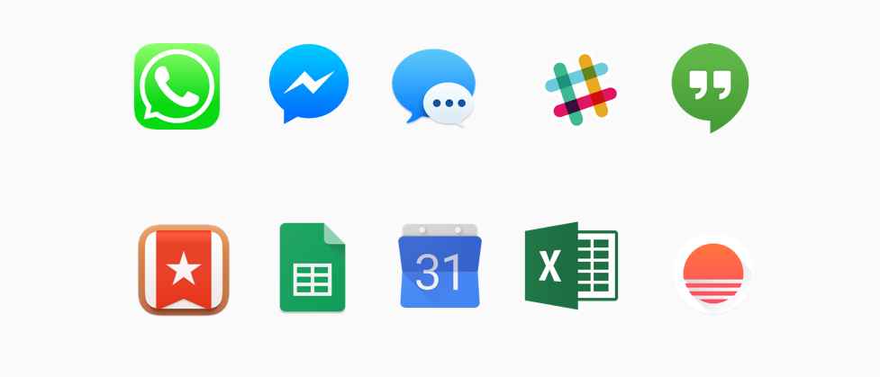
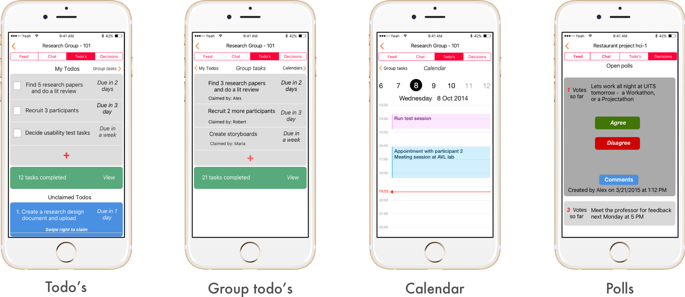

Group Time
A mobile application to help student groups collaborate
DATE
March - May 2016
MY ROLE
UX Researcher
MY KEY CONTRIBUTIONS
Contextual Inquiry
Wall Walk, Visioning workshop
Interactive-Prototype
TOOLS USED
Lots of Post-its
Sketch
MarvelApp
The Problem

From our contextual inquiries it became evident that students use many different applications for communication, and keeping track of goals and schedules. Students waste time swtiching between platforms to communicate among each other, and to know each others progress in a project.
Some problems we identified:
- Group members often do not have the same apps
- Sometimes group members do not agree on using one app
- Email was the most common mode of communicating among group members
- Often, members spend time digging through prior emails for "that one important thing we talked about"
- Increased cognitive load due to information hunting, and communication using many apps
Solution
Based on our research data, our final solution was to combine some of the most common features members of student groups used when they had to collaborate with each other. Based on this, we decided on four main features for the app:
- Accountability: A group todo list that lets you view your entire group task lists and due dates
- A decision center that allows user to vote, make decisions and get results faster
- IM to SMS: Communication not dependent on internet access
- IM: An online group messaging service

